李圳深
生成式视觉恢复｜底层视觉｜AIGC｜图像/视频增强
科研项目
生成式图像恢复：基于多模态Flow Matching和Mamba
面向水下图像增强任务，将图像恢复建模为多模态条件生成问题， 基于 Flow Matching 学习从退化分布到高质量分布的连续生成过程， 并结合文本语义条件与 Mamba 高效建模，在轻量化设置下实现高质量恢复。项目包含两篇独立论文。
多模态条件生成式恢复
Flow Matching
Mamba
多模态（text-image）
文本引导增强
📐 项目整体框架
退化图像
→
CLIP LoRA
(论文二)
→
(论文二)
文本特征
→
Self-Attention
语义注入
→
语义注入
Flow Matching + Mamba
(论文一)
→
(论文一)
增强图像
🔵 论文一：生成主干
🟢 论文二：语义模块
项目亮点
论文一（在审）
All-Round Underwater ImageEnhancement Based on Long-Range Compensated Mamba
IEEE TCSVT，under review
- 将 Flow Matching 引入图像恢复任务，建模从噪声到清晰图像的连续生成过程，提升复杂退化场景下的恢复能力
- 基于 Mamba 构建高效生成主干，并设计 S2C-SS2D 模块，增强二维长程依赖建模能力，在低参数规模下保持高恢复质量
- 提出面向水下场景的灰度世界白平衡算法并转化为可学习的色彩校正模块，改善颜色偏移问题
- 参数量 9.78M (↓62%)，FLOPs 33.27G (↓50%)，在 UIEB、LSUI 上达到 SOTA
视觉效果对比
（左→右：输入 | Ours | WF-Diff'24'CVPR'Diffusion | GuideHyb'25'TCSVT'CNN | Hformer'25'JOE'Transformer | FMamba'25'TGRS'Mamba）
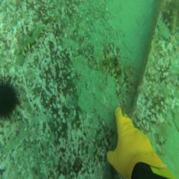
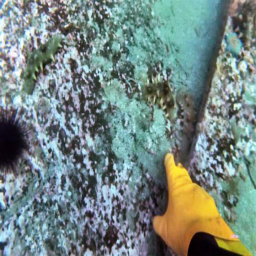
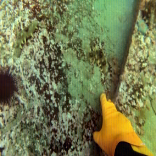
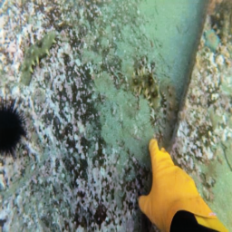
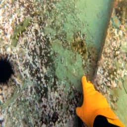
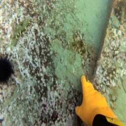
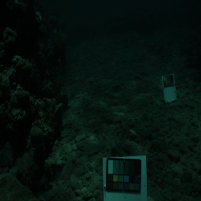
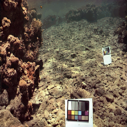
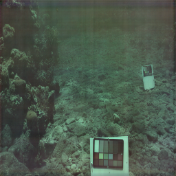
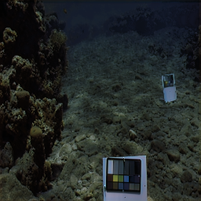
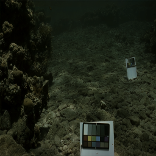
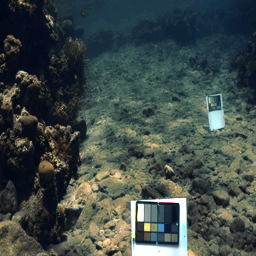
论文二（进行中）
语义引导的水下图像增强：基于 CLIP LoRA 的自适应文本注入
准备投稿（短文）
- 构建高质量水下图文数据集（LLaVA 生成 + 主动学习筛选），文本描述聚焦“物体+环境”，避免颜色偏见
- LoRA 微调 CLIP：仅训练 0.65% 参数（98万），相似度间隔 0.019 → 0.063 (+142%)，R@5 25.6% → 40.0%
- 将文本特征通过 Self-Attention 注入论文一的生成主干，在极端色偏样本上 PSNR ↑1.1dB，SSIM ↑0.04
- 证明高质量语义描述可显著提升水下增强模型对极端场景的鲁棒性
相似度分布对比

Base (gap=0.019) vs LoRA (gap=0.063)
检索性能 R@K

数据集构建
基于图像增强数据构建 (Ideg, Iref, T) 三元组， 其中 Ideg 为退化图像， Iref 为参考高质量图像， T 为对应文本描述。
文本按照“场景语义 + 恢复目标”进行构造，既提供图像内容信息，又引入期望的恢复属性，从而为生成过程提供有效约束。
数据示例
退化图像 / 参考图像 / 文本描述。
结果
- 参数量 9.78M，较基线减少 62%
- FLOPs 33.27G，较基线降低 50%
- 在UIEB，LSUI，SeaThru多个数据集上优于基线方法，并达到 SOTA 水平
模块作用分析
- 多模态条件注入：引入文本语义后，模型对场景内容和颜色风格的恢复更稳定，增强结果更符合语义描述。
- 长程补偿 Mamba：相比基础主干，改进模块增强了二维长程依赖建模能力，在大范围颜色偏移和低光区域恢复中表现更好。
- 灰度世界白平衡：有效缓解水下场景中的颜色偏移问题，为后续生成恢复提供更稳定的输入分布。
消融1：Flow Matching 与文本条件注入
可视化对比：
第一组：输入 | 使用 Flow Matching | 无 Flow Matching
第二组：输入 | 使用文本条件 | 无文本条件
第一组：输入 | 使用 Flow Matching | 无 Flow Matching
第二组：输入 | 使用文本条件 | 无文本条件
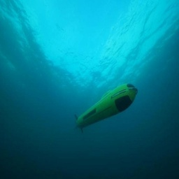
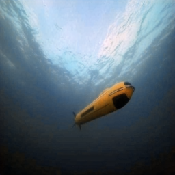
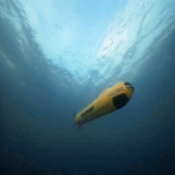

消融2：不同条件引导对色彩还原的影响

视频增强与时序一致性建模
解决视频闪烁、跳变，实现稳定文本驱动编辑
视频增强
时序一致性
CLIP
文本编辑


消融：时序建模模块对闪烁抑制的效果

专业技能
PyTorch｜Python｜C｜Matlab
Flow Matching｜Diffusion｜DiT｜Stable Diffusion
底层视觉｜图像/视频增强｜多模态｜AIGC
联系方式
GitHub: counterany
邮箱: 你的邮箱